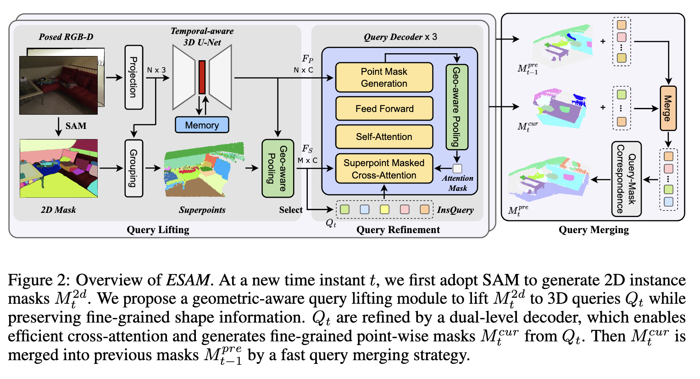
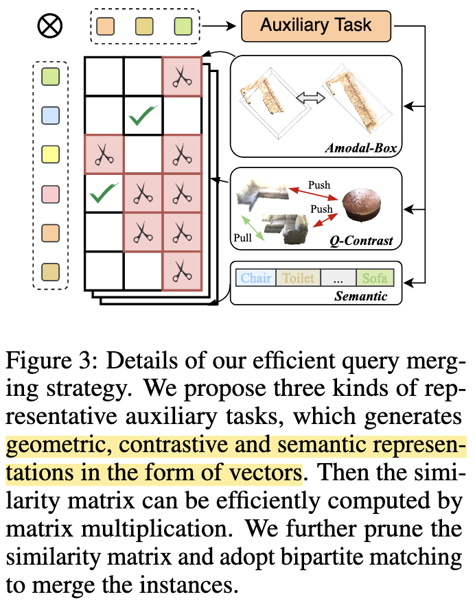
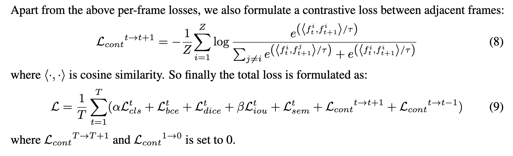
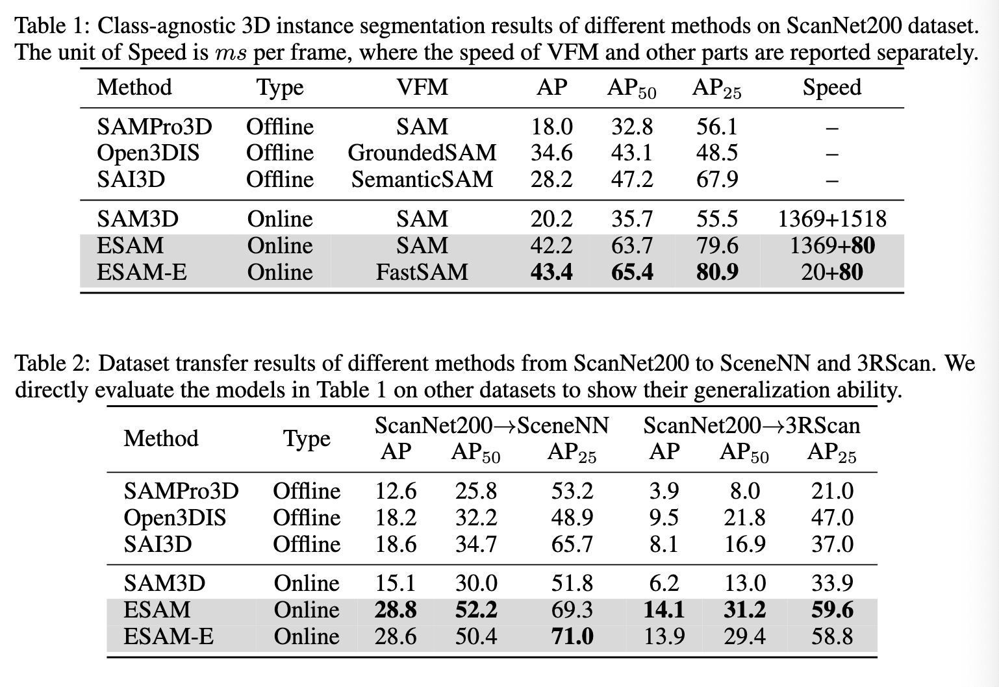

EmbodiedSAM¶
ONLINE SEGMENT ANY 3D THING IN REAL TIME
输入是给定相机位姿的图片流，输出是这个 3D 场景的语义分割结果，做到 real time
Method¶
Overview¶
给定一个序列的知道 pose 的图像序列，用 \(x_t = (I_t,P_t)\) 前者是带颜色的图像，后者是通过把深度图根据相机参数映射得到的三维点云。目标是在 3D 空间中获得实例分割的结果，希望做到 onlin, realtime, temproally consistent。
用增量式方法来做，对每一个新输入的图像，对当前帧做实例预测，然后把之前的结果 merge 进去。

QUERY LIFTING AND REFINEMENT¶
收到图片后，首先用 SAM 去获得 2D 的实例分割，我们将基于此获得 3D 的实例分割。由于直接把这个 mask 通过点云的映射投到三维会造成不精确和空间不连续，我们先把每一个 2D mask 升维成一个 3D query feature，这个步骤是用下面的方法做的
对于点云 \(P\in \mathcal{R}^{N\times 3}\) 和二维 Mask \(M \in \mathcal{M}^{2d}\)，首先我们根据 Mask 的实例分割结果把对应点像素点的颜色（也就是分割实例）投影到点云上，这样点云中的每个点就有了一个 superpoint 的 index（就是第几个特征类）\(S \in \mathcal{Z}^N\)，S 的每个元素在\([0,M)\)中。
接下来把点云去过一个 3D sparse U-Net 来分离 temroal-aware 的特征，\(F_P \in \mathcal{R}^{N\times C}\)
有了这两个就可以把 point-wise 的特征 pool 成为 superpoint 的特征 \(F_S \in \mathcal{M\times C}\)，这里我的理解就是把全部的特征 pool 成一个个的 superpoint 的特征。这里的 superpoint 其实就是分割实例的结果。
这里如果用 naive 的池化比如最大 / 平均的做法，会让前面分离出来的 3D 特征减弱，所以把 geometric shape 考虑进去。对于一个 superpoint（聚类），对其中的每一个点计算一个 normalized relative position \(p_j^r\)相对于聚类中心 $ \mathbb{P}_i = {p_j^r = \frac{p_j - c_i}{max(p_j) - min(p_j)|p_j\in P^i}}$ 这代表了 normalized shape of this superpoint with diameter of 1 and center of origin
根据这个 shape 我们可以计算一个 local feature 和 global feature
这里的 MLP 作用在每一个 point 上，Agg 是一个聚合函数，用 channel-wise max pooling 来实现。这里的 local feature 和 global feature 代表点和形状之间的相关性，所以直接 concat 到一起，然后再用一个 MLP 来预测 point-wise weight
最后把这两部分合起来得到 superpoint 的特征
这个计算可以对每个 superpoint 并行计算，所以是很高效的
Dual-level Query Decoder¶
经过前面的步骤，我们获得了三维 superpoint 的特征 \(F_S\)，然后我们从中初始化了一系列 3D 实例查询 \(Q_0\)，这个 Query 用一些 transformer-based query decoder layers 来不断 refine，然后用来预测 3D masks
下面是这个 decoder 的做法，用 masked cross-attention between queries and scene representations
这其中 Q 是 \(Q_l\) 的线性投影， K 和 V 是场景表示 F 的线性投影，这里的 F 可以是 point 的特征 \(F_P\) 也可以是 superpoint 的特征 \(F_S\)，\(A_l\) 是 attention mask，代表当第 i 个 query 在第 j 个 point/superpoint 中出现才做 attention
经过这样的 query decoder 后，在经过一个 self-attention 的 layer 和前向网络就可以得到 \(Q_{l+1}\)，经过这样一次迭代，refine query。
上面的 attention mask 是通过
其中 \(\phi\) 是线性层，根据 F 的不同选择得到不同的 mask
这里之所以要选择 point 或者 superpoint，是因为只用 point 会导致开销很大，也就是之前说的无法 real time 的一个重要原因，如果只用 superpoint 这个迭代的优化是有上限的，所以使用了一个 dual-level 的 query decoder，在 cross- attention 的时候用 superpoint，而在 mask 预测的时候用 point 来获得更细粒度的结果。这样会造成 mask 的 shape 与 QK 的形状不一致，所以还需要一个池化来做，这个池化就是前面提到的 Geometric-aware pooling
这样迭代三次后，就得到了准确的 point mask 和相应的 Query，然后做 mask-NMS 来滤除重复的结果
EFFICIENT ONLINE QUERY MERGING¶
前面的部分得到了 point mask，现在的问题是如何把这些 merge 起来得到一个场景级的实例分割。
传统方法是把之前所有的 mask 的所有 point 都做一次比较，这样的开销太大了，为了实现具身智能的 real time，这里选择首先把 mask 表示为另一种形式（可以看作一种压缩），然后再做比较。

之前除了 mask 还有对应的每个实例的 query feature，可以把 mask 融合转化为 query 融合，例如之前帧一共有 M 个物体，当前帧一共 N 个物体，由于每个物体都有一一对应的 query，因此这个问题可以通过矩阵乘法直接完成相似度计算！假设 query 特征维度为 C，我们将 MxC 和 NxC 的特征相乘便得到 MxN 的相似度矩阵，再通过二分图匹配的方法在该矩阵上得到匹配关系。对于匹配上的物体，我们将其 3D Mask 合并，并将对应的 query 特征加权融合；对于未匹配上的物体则直接注册为全局新物体。
实际中，仅依靠 query 表示虽然高效，却仍存在表示能力不够的问题。我们在不影响速度的前提下设计了三种更细致的判据，通过不同的 MLP head 在 query 上预测出三种表示
每次进行 3D Mask 的融合后，这三种表示也会进行对应的加权融合，并作为“过去帧”再次与未来的“当前帧”进行高效融合。由于所有操作仅需要矩阵乘法和二分图匹配，所需时间在 5ms 以内，相比手工融合的策略快数百倍，且性能更强！
Loss Function¶

这个 loss function 包含了分辨前景还是背景的损失，预测 3D mask 用了 binary cross-entropy 和 Dice loss，对前面的 merge 的训练用了 iou loss， 对分割的训练用了 sem 的 loss，最后还有相邻帧之间的 contrastive loss，这是一个端到端的多任务训练过程。
实验结果 ¶
我们进行了多种设置的实验。首先是 class-agnostic 3D instance segmentation，对标 SAM3D 等文章的设置。由于这些文章大多数为 zero-shot，而我们需要训练，为了更公平展示泛化性，我们还进行了 zero-shot 迁移实验，从 ScanNet200 迁移到 SceneNN 和 3RScan 上。

此外我们还进行了 online 3D instance segmentation 的实验，对标之前的在线 3D 实例分割工作。在两种任务上我们都取得了 SOTA 的性能和速度。

我们还分析了 EmbodiedSAM 的推理时间分布，发现速度的瓶颈主要在 3D 特征提取部分，我们的 merging 策略的开销几乎可以忽略不记。如何加速 3D 骨干网络的特征提取是一个非常有价值的问题，也是未来突破 30FPS 的最后阻碍。
潜在问题 ¶
尽管表现令人满意，但 ESAM 仍然存在一些局限性。首先，ESAM 是否是实时的，取决于所采用的 VFM。目前，我们采用 SAM 和 FastSAM，其中只有 FastSAM 才能实现实时推断。但是，我们认为，在不久的将来，将会有更有效的 2D VFM 具有更好的性能和更多功能，并且可以进一步改善 ESAM，并改善 2D VFM。其次，用于特征提取的 3D U-NET 和基于内存的适配器相对较重，这在 ESAM 的 3D 部分中的大部分推理时间都很重要。如果我们能使骨干更有效，那么 ESAM 的速度可能会提高到更高的水平，这是留给将来的工作。